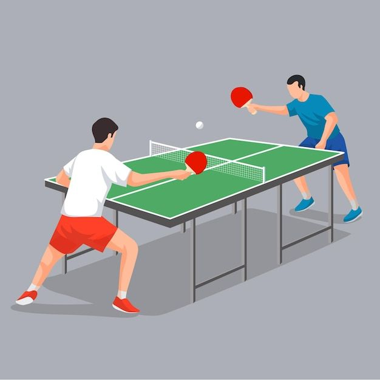

Table tennis, also known as ping-pong, is a fast-paced sport played on a rectangular table divided by a net. Players use small paddles to hit a lightweight ball back and forth across the table, aiming to score points by making the ball land on their opponent's side of the table. The game requires quick reflexes, precise control, and strategic shot placement. It can be played in singles (one player on each side) or doubles (two players on each side). The objective is to win points by making the ball bounce twice on the opponent's side or by causing the opponent to miss the ball.
